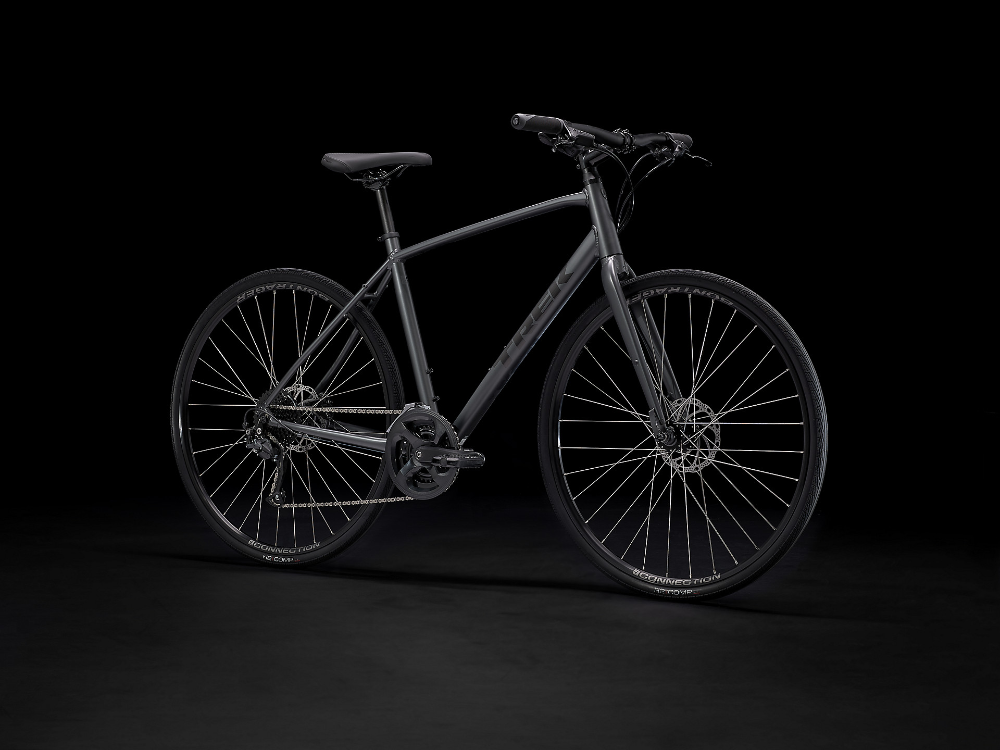

Hobbies
Biking
My favorite Hobby is Biking. I love biking for so many reasons. One of the biggest reasons is the positive environmental impact that Biking can have. according to a professor at UC davis, her decision to bike to work rather than drive resulted in a three ton reduction in her carbon footprint.Additionally, I enjoy biking as a low-stress alternative to driving. When I bike, it feels like I am able to relax and enjoy the world. In contrast, driving is often a frustrating and high-stress ordeal.

Reading
I also enjoy Reading. My favorite genres are Manga,Science Fiction, and Young Adult. My favorite book currently is Little Brother, by Cory Doctorow.

Anime
I love to watch Anime. My Favorite Anime of all time is Naruto.